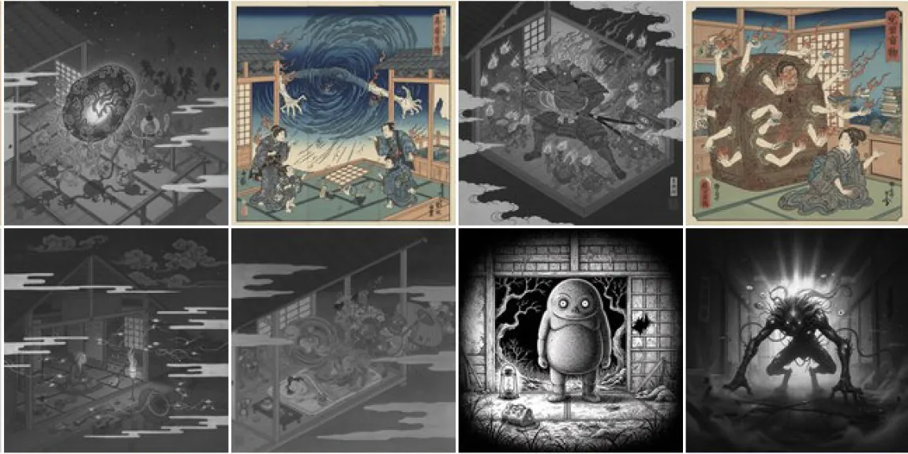
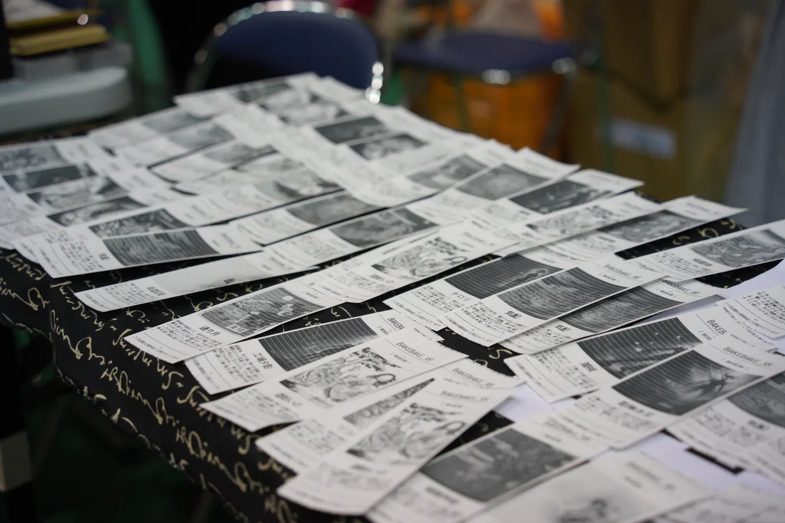
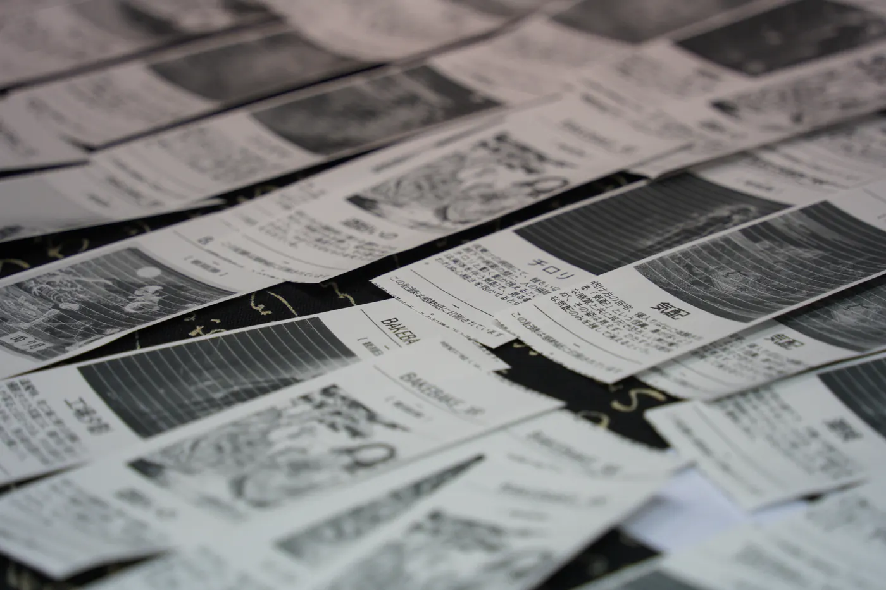

EXPERIENCE 02 ── 作るMAKE
自分の怪異体験から妖怪を生み出す
Making a yōkai from your own experience
あなたの体験から、新たな妖怪が生まれる。説明のつかない感覚を語ると、伝承データベースと生成AIが名前・物語・姿を提案し、時間とともに消える感熱紙に記録します。
A new yōkai, born from your own experience. Describe a sensation you cannot explain; the folklore database and generative AI propose a name, a story and a form, printed on thermal paper that fades with time.

妖怪を「読む」から「生む」へ
From reading yōkai to making them
かつて妖怪は、ふつうの人が自分の不思議な体験に名前を与えることで生まれ、語り継がれてきました。「作る」体験は、その営みを現代に取り戻す試みです。体験者は妖怪を鑑賞するのではなく、自分の体験を一つの項目として妖怪文化に加える側に立ちます。
Yōkai were once born when ordinary people gave a name to their own strange experiences, and were passed on by retelling. "Make" tries to bring that practice back. Instead of viewing yōkai, the visitor adds their own experience as a new entry to yōkai culture.
体験の流れ
How it works
-
体験を語る
Tell your experience
いつ・どこで・何を感じたか。説明のつかない感覚を、自分の言葉で入力します。
When, where, what you sensed — describe the unexplained in your own words.
-
伝承を探す
Search the tradition
国際日本文化研究センター「怪異・妖怪伝承データベース」から、似た伝承が呼び出されます。
Related records are retrieved from the Nichibunken Kaii–Yōkai Folklore Database.
-
名付け、姿を与える
Name it, give it a form
民俗学的な名付けの作法にならって生成AIが名前と短い物語を提案し、和の画風で姿を描きます。採用するか、直すか、別の名を付けるかは体験者が決めます。
Following folkloric naming conventions, generative AI proposes a name and a short narrative and renders the yōkai in a Japanese pictorial style. The visitor accepts, edits, or names it differently.
-
感熱紙に記録する
Print on thermal paper
生まれた妖怪は感熱紙に印刷して持ち帰れます。印字は時間とともに薄れて消えていきます――口伝えの伝承が変わり、忘れられていくように。
The yōkai is printed on thermal paper to take home. The print fades over time — the way oral tales change and are forgotten.


消えていく記録、という設計
Records designed to fade
データベースに永久保存するのではなく、あえて消えていく紙に印字する。これは妖怪文化がもともと「その場で語られ、覚えている人がいる間だけ生きている」ものだったことに倣った設計です。デジタルアースへの記録（第三の体験）と対になって、残るものと消えるものの両方をつくります。
Rather than storing entries permanently, we deliberately print them on paper that disappears — echoing how yōkai culture lived only as long as someone remembered a tale told on the spot. Paired with the digital-earth record (the third experience), the work creates both what remains and what fades.
次の体験へ
What comes next
生まれた妖怪は、過去の伝承とともにデジタルアース上に置かれ、土地の記憶として「記録する」体験へつながります。
The new yōkai is placed on the digital earth alongside historical records, leading into the "Record" experience.